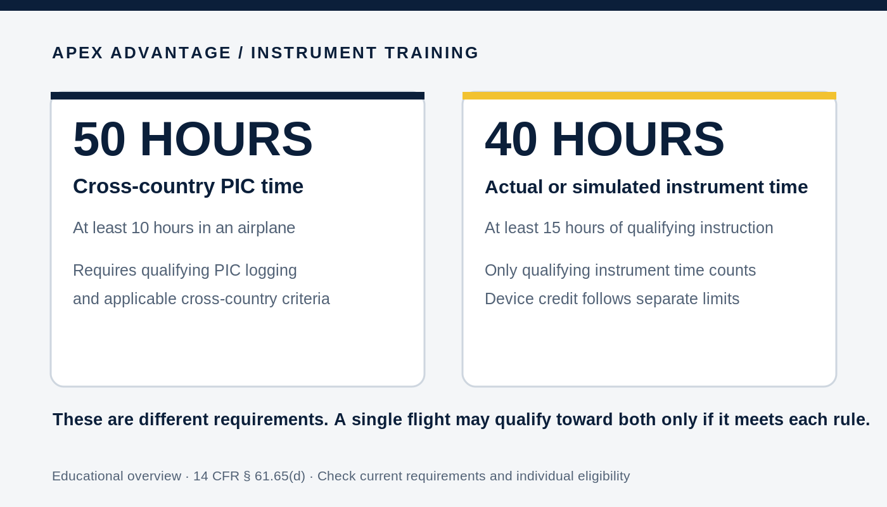
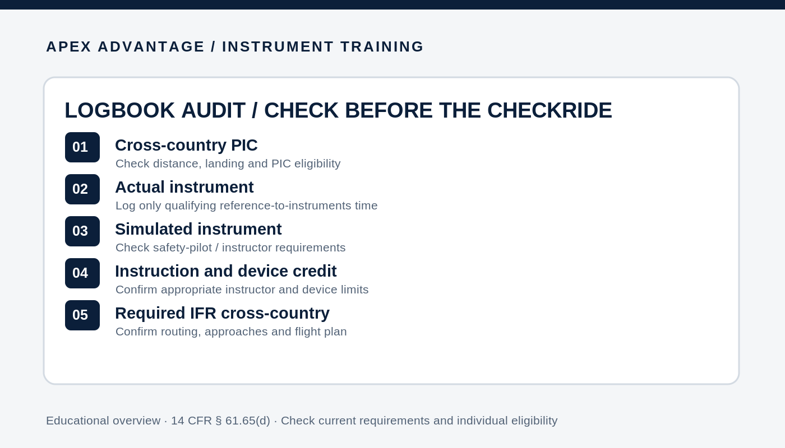

If you're working toward an instrument rating in Austin, one of the most useful things you can do before your next flight is audit your logbook. Total time, cross-country PIC time, instrument time, and instrument instruction are not interchangeable. And the FAA doesn't treat them as interchangeable, either.
Whether you're training near Austin, Taylor, Georgetown, or elsewhere in Central Texas, knowing what actually counts can help you schedule more purposeful flights and avoid surprises when your instructor reviews your eligibility for the practical test.
What flight time does the FAA require for an instrument rating?
For a typical Part 61 instrument-airplane rating applicant, 14 CFR § 61.65(d) generally requires:
- 50 hours of cross-country flight time as pilot in command, of which at least 10 hours must be in an airplane, unless a regulatory exception applies.
- 40 hours of actual or simulated instrument time, including 15 hours of instrument flight training from an authorized instructor who holds an instrument-airplane rating.
- Three hours of instrument flight training in an appropriate airplane within two calendar months before the practical test.
- A qualifying IFR cross-country training flight with an authorized instructor, covering at least 250 nautical miles along airways or ATC-directed routing, with an instrument approach at each airport and three different kinds of approaches using navigation systems.
These are minimum aeronautical-experience requirements -- not a promise that a pilot will be checkride-ready at exactly those totals. Other eligibility, knowledge, and proficiency requirements also apply. Certain exceptions and device-credit rules may affect an individual applicant's calculations.

1. Cross-country PIC time isn't just any flight to another airport
For the instrument-rating cross-country requirement, a qualifying flight generally needs a landing at a point more than 50 nautical miles in a straight line from the original point of departure, along with the applicable requirements to log pilot-in-command time. The relevant definitions and logging rules are in 14 CFR § 61.1 and § 61.51.
A flight that takes you a long distance in the air doesn't necessarily qualify if the required landing criterion isn't met. Likewise, being aboard for a qualifying route does not automatically mean you can log the time as PIC.
Austin-area training tip: When planning cross-country flights, work backward from both the regulatory requirements and the skills you want to develop. Use the opportunity to practice weather decisions, route selection, fuel planning, diversion options, and communication in unfamiliar airspace.
2. Instrument time means time operating by reference to instruments
Under 14 CFR § 61.51(g), a pilot logs aircraft instrument time only for the time they operate solely by reference to instruments under actual or simulated instrument flight conditions.
Actual instrument time
Actual instrument time is based on the conditions during the qualifying portion of flight -- not simply whether you filed an IFR flight plan. Flying IFR in clear visual conditions does not automatically turn that flight into actual instrument time.
Simulated instrument time
Simulated instrument time typically involves a view-limiting device. In an aircraft, simulated instrument flight must comply with the applicable safety-pilot requirements of 14 CFR § 91.109. The safety pilot must meet the regulation's qualifications; both pilots should understand their roles and logbook eligibility before the flight.
Only the qualifying portion flown by reference to instruments is logged as simulated instrument time. The time category and the person who may log PIC are separate questions.
3. Does simulator time count toward an instrument rating?
It can -- but only under the applicable device, instruction, and credit rules. FAA-approved full flight simulators, flight training devices, and aviation training devices are not automatically interchangeable with one another or with aircraft flight time.
For training-device instrument aeronautical experience, § 61.51(g)(4) includes instructor-observation and logbook-signature requirements. § 61.65 separately governs the amount and type of credit that can be applied to the instrument rating.
A simulator may be an excellent place to practice holding patterns, instrument approaches, instrument scan, workload management, and emergencies. Before treating device sessions as credit toward an FAA minimum, check the device's authorization and your training record with your instructor.
For a deeper discussion, see How Many Simulator Hours Count Toward an Instrument Rating?
4. Don't miss the qualifying IFR cross-country flight
A pilot can accumulate instrument time without having completed every specific training requirement in § 61.65(d). One important example is the required IFR cross-country training flight.
It must be conducted in an airplane with an authorized instructor, under IFR on a filed flight plan, and meet the rule's route and approach conditions. Those include a flight of at least 250 nautical miles along airways or ATC-directed routing, an instrument approach at each airport, and three different types of approaches using navigation systems.
The practical lesson is straightforward: plan this flight against the actual rule with your CFII, rather than assuming a normal long cross-country with several approaches will qualify.
5. Five logbook mistakes to catch early

- Counting every cross-country flight toward 50 PIC hours. Verify the applicable landing/distance definition and your eligibility to log PIC.
- Logging an entire IFR flight as actual instrument time. Log only the qualifying instrument portion.
- Treating simulator time exactly like aircraft instrument time. Check the device category, authorization, instructor requirements, and credit limits.
- Treating all dual time as qualifying instrument instruction. The instruction and instructor must meet the regulation's specific requirements.
- Waiting until checkride week to audit your logbook. Review training records early, including recent instrument instruction and the required IFR cross-country.
6. How to plan your instrument training near Austin
Start by creating an aeronautical-experience summary from your existing logbook. Separately total your qualifying cross-country PIC time, actual instrument time, simulated instrument time, appropriate instrument instruction, and any eligible training-device credit. Then identify specific remaining requirements with your instructor.
Someone who already has substantial qualifying cross-country PIC time may need a very different plan from a pilot who has strong instrument proficiency but is still short on the cross-country minimum.
A good training plan doesn't just maximize hours. It also builds confidence with clearances, approaches, holding, weather interpretation, cockpit workload, abnormal situations, and conservative go/no-go decisions.
Minimum hours aren't the same as instrument proficiency
The FAA's minimum hours establish eligibility criteria. They don't establish that a pilot is automatically ready for a checkride -- or for challenging real-world IFR operations.
A proficient instrument pilot needs to manage the whole flight: preflight planning, weather decisions, routing, ATC communication, aircraft control, approach selection, and missed-approach contingencies. Your CFII's proficiency assessment matters as much as the arithmetic in your logbook.
Preparing for your instrument rating with Apex Aviation
Apex Aviation's planned Austin-area flight training is being developed around purposeful training, proficiency, and sound aeronautical decision-making. In-person aircraft access and operating arrangements are not yet available or guaranteed.
In the meantime, Apex Advantage offers aviation education and ground-based preparation resources. You can also explore the Instrument Rating Training in Austin page to learn about Apex's planned training program.
Frequently Asked Questions
Do I need 50 cross-country PIC hours before I can start instrument training?
No. You can begin instruction before meeting that aeronautical-experience minimum. For a typical Part 61 applicant, the relevant requirement must be satisfied before the practical test, subject to applicable regulatory exceptions.
Does every flight on an IFR clearance count as instrument time?
No. IFR clearance status alone does not determine whether time may be logged as actual or simulated instrument time.
Can I count time in a flight simulator or aviation training device?
Certain approved device sessions may qualify, but the device type, training conditions, instructor participation, and applicable credit limits matter. Confirm eligibility for the specific device and session.
Does every hour with a CFII count toward the 15-hour minimum?
No. The time must qualify as the specific instrument flight training required by § 61.65, and the instructor must meet the applicable rating requirements.
Where can I learn more about instrument training in Austin?
See Apex Aviation's instrument-rating training information and Apex Advantage.
Don't just build hours. Build the understanding and judgment to use them. Explore Instrument Rating Training in Austin or Apex Advantage for ground-based preparation resources available now.
This article is for general aviation education and is not a substitute for current FAA regulations or individualized guidance from a qualified instructor or examiner. Some requirements differ for Part 141 training or qualifying prior experience.